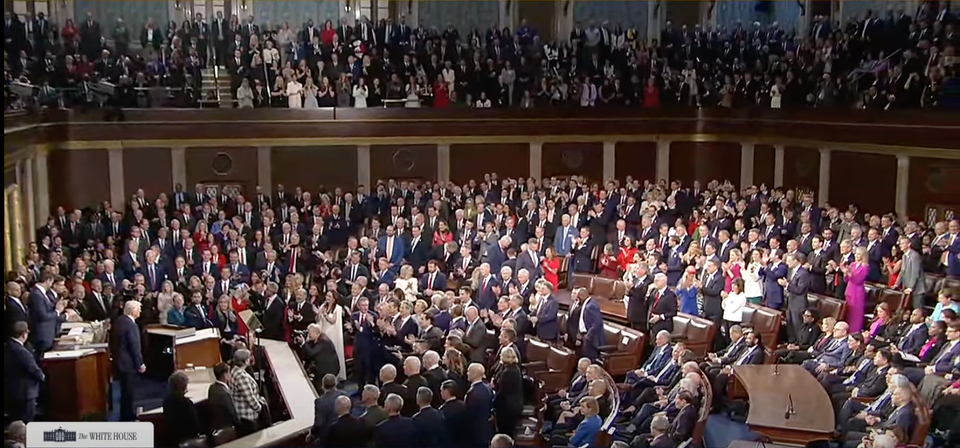

世界苦茶03月05日新闻 | 47条 | 中国政府报告增量政策少于去年计划

中国政府报告增量政策少于去年计划 | 关税战打响美股暴跌 | 特朗普今日在国会发表执政演讲 | 特斯拉销量大幅度下跌 | 长和在巴拿马的港口权出售 | 欧洲计划8000亿欧元武装欧洲
三个水枪手
苦茶数据
美元兑人民币：7.26（昨日7.28，前日7.29）
美元兑日元：150.10（昨日149.06，前日150.38）
上证指数：3324（昨日3316，前日3331）
标普500指数：5778（昨日5849，前日5954）
比特币：87708（昨日83788，前日92760）
布伦特原油：70.99（昨日71.12，前日73.15）
中国新闻
• 十四届全国人大三次会议3月5日开幕，李强作政府工作报告： 2025年预期经济目标：GDP增长5%，城镇调查失业率5.5%，CPI涨2%。赤字规模5.66万亿（赤字率4%）一般公共预算指出29.7万亿元（比上年增1.2万亿）地方专项债4.4万亿元（比上年增5000亿）。拟发行1.3万亿元超长期特别国债，其中3000亿用于消费品以旧换新。拟发行5000亿元特别国债，用于国有大银行补充资本。出台健全社会信用体系的政策，构建统一的信用修复制度。完善企业简易退出制度，逐步推广经营主体活动发生地统计。开展中央部门零基预算改革试点，支持地方深化零基预算改革。推进收购存量商品房，在收购主体、价格和用途方面给地方政府更大自主权。动态调整债务高风险地区名单，支持打开新的投资空间。 （翻评：各个增量措施比之前谈到的数量都要少，而且要少50%左右，中央的增量不坚决啊。）
• 日防长避谈护卫舰穿越台海 ：日本国防部长中谷元受询时，避谈日本护卫舰曾在2月上旬驶经台湾海峡。据日本共同社报道，针对日前有报道指日本护卫舰“秋月”号在2月上旬通过台湾海峡，日本国防部长中谷元星期二在内阁会议后的记者会上说：“我不会谈及关于自卫队装备的运用。”至于中国军队在日本周边活动趋于活跃的情况，中谷元强调，这是日本军方严重关切的事项。“我们将冷静坚决地应对”。
• 中国公安部处罚造谣“80后死亡率超5%” ：中国公安部通报九人因造谣“80后死亡率突破5%”等被处罚。据央视新闻报道，今年2月份以来，一些微信公众号发布数据称“截至2024年末，‘80后’死亡率突破5.2%，相当于每20个‘80后’中就有1人已经去世”“‘80后’的死亡率已经超过‘70后’”等。这些文章宣称，上述数据来自第七次人口普查的“权威数据”。
• 全国人大称中欧是互补合作伙伴 ：中国全国人大会议发言人娄勤俭说，中欧没有根本利害冲突，也没有地缘政治矛盾，是相互成就的伙伴。十四届全国人大三次会议星期二12时在北京人民大会堂举行新闻发布会。在回应西班牙媒体关于中欧关系的提问时，娄勤俭说，中国高度重视对欧关系，作为全球两大和平、建设性力量，中欧关系健康稳定发展符合双方根本和长远利益，符合国际社会的共同期待。
• 中国两会关注经济放缓和民企支持 ：2025年中国全国政协、人大“两会”分别于3月4日、5日开幕，经济增速放缓、支持民营企业、地方债务化解等议题成为今年“两会”的关注焦点。在全国人大新闻发布会上，全国人大发言人娄勤俭坦言中国经济面临挑战，但仍强调超大规模市场和完整产业体系将助力中国克服困难，并重申政府对民营经济的支持。然而，分析人士指出，北京当局虽试图借助民企活力扭转经济下行，但“国进民退”趋势未根本改变。此外，人工智能企业DeepSeek的崛起成为今年“两会”的热话题，反映出美中科技竞争加剧，而中国军费持续增长也引发国际关注。
• 美卫星图像显示中国或建核动力航母 ：美国媒体引述卫星图像显示，中国似乎正建造一艘能媲美美国福特级航母的巨大核动力航母，并将设有四个电磁弹射器。美国全国广播公司星期天报道，美国国防承包商迈萨科技提供的卫星图像显示，中国可能在大连造船厂为一艘巨大的核动力航空母舰建造实验分段。报道引述专家称，中国通常在新航母投入生产前，会先行建造测试分段。
• 联合国报告显示，BN(O)港人面临社会障碍 ：联合国经济、社会及文化权利委员会在其最新对英国的第七次定期报告中，首次正式提及持英国国民护照（BN(O)）签证移英的香港人所面临的经济、社会及文化权利障碍。委员会指出，这些障碍加剧了不平等，并阻碍了他们的社会融入，建议英国政府采取多项措施以改善BN(O)签证持有者的生活条件。委员会在星期一发表对英国的第七次定期报告的结论性观察，首次在文件中提到BN(O)签证者面对的问题，并对英国政府提出具体建议。委员会认为，英国应该消除BN(O)签证持有人进入劳动市场的障碍，包括确保资格认证得到承认，并提供职业培训及社会保障权利，以及透过针对性的支援计划及宣传活动加强社会融入。
• 美驻华大使馆称其微博评论区遭审查 ：美国驻华大使馆星期二表示其微博账号再度遭到了审查。大使馆称，过去一年多以来，其微博账号的评论区常常遭到中国审查人员的过滤，而大使馆几天前抱怨这一审查的微博帖文也被删除。“自2024年2月起，美国驻华大使馆官方微博账号上的所有评论都通过一个我们无法控制的不透明程序进行了‘过滤’。只有经过审查人员批准的评论才会对公众显示，” 大使馆在其X账号上写道，“我们没有这样做。我们欢迎公开的公众讨论，支持言论自由。” 大使馆表示。大使馆还贴出了两张截图，显示其自2月28日以来曾两次在微博上抱怨了这一审查行为，但大使馆表示这两条帖文都遭到了删除。
• 香港民主党启动解散程序 ：香港民主党近日宣布将启动解散程序，这一消息虽然象征着香港民主派政党的进一步消失，但在海外倡议者看来，其影响已远不如以往。他们指出，国际社会早已接受香港失去民主的现实，甚至对民主党能存续至今感到意外。流亡美国的前香港立法会议员梁颂恒表示，美国的政治人物已经习惯香港日渐失去的民主自由，甚至有些不特别跟进香港议题的议员会惊讶。他说：“‘原来香港还有民主派政党的？’多过觉得（民主党）解散是一件大事”。梁颂恒表示，美国的政策制定者认为香港已死，但这些只是他们对政治现实的研判，不会改变他身为倡议者推动的工作。
• 菲政府调查中共相关组织资金 ：菲律宾总统府官员星期一表示，菲律宾政府将调查与中国共产党相关的团体所提供的现金及其他捐款，以确定这些捐赠是否出于善意。据路透社上周报道，菲律宾执法部门1月份以涉嫌间谍活动的罪名逮捕了五名中国男子，其中四人为中国公民，他们因涉嫌搜集西菲律宾海附近菲律宾海军的影像和地图而被捕。根据照片、视频和网上的帖子显示，相关人士及团体向打拉市市长捐赠了50万菲律宾比索，标注为“扶贫助学金”，并向马尼拉警方捐赠了10辆摩托车，向打拉市警方和当局捐赠了10辆巡逻车。
• 美文件指示避免“Chinese”负面含义 ：根据美国之音获取的一份内部文件，美国在中国共产党与中国人民之间划出明确区隔，为华盛顿把北京的政府--而不是广大民众--视为战略竞争对手定下基调。这一做法基本上与美国国务院在美国总统唐纳德·特朗普第一届政府晚期的公开讯息相一致。在最近发出的与中国相关术语指导文件中，国务卿马尔科·卢比奥指示美国大使馆和领事馆各岗位，在使用形容词“Chinese”(中国的/中国人)有可能暗含对更广义的中国人民、文化或语言的负面意思时，需使用更为具体的描述词汇，并避免使用“Chinese”。
• 科大讯飞董事长提议完善AI失业保障 ：中国语音识别技术公司科大讯飞董事长刘庆峰星期一呼吁，完善人工智能失业保障，打造AI就业友好型社会。据《南方都市报》报道，2025年中国两会召开之际，面对AI热潮下“AI导致失业”的话题，中国全国人大代表刘庆峰说，应构建“就业监测－预警－响应”全链条监测机制，建立“AI就业动态监测平台”，在长三角、珠三角等制造业集聚区试点“失业风险预警系统”，大规模部署AI的企业提交替代岗位数量、再就业方案等社会责任报告，确保技术应用与社会公平协同发展。刘庆峰建议，试点“AI失业保障专项保险”，设置6至12个月的失业缓冲期，采取“政府主导投保+商业机构运作”模式，为最易被AI冲击的岗位建立专项保障基金；引导保险机构开发商业AI失业保险产品，为全社会提供更丰富的失业保障产品选择。
亚太印太新闻
• 菲律宾FA-50战斗机夜间任务中失踪 ：一名军方官员星期二说，一架菲律宾FA-50战斗机及两名机组人员失踪，当时他们在为棉兰老岛地区打击共产主义反对派武装的地面部队提供支援。法新社报道，空军发言人卡斯蒂略说，这架战斗机正在参与为支援地面部队而进行的战术夜间行动，却在飞越陆地前往目标区域时失踪。菲律宾陆军发言人德玛阿拉没有透露任务细节，但向法新社证实，失踪的FA-50属于被派往棉兰老岛布基农省打击共产主义反对派武装的提供空中支援的部队。
• 朝鲜推出与平壤马拉松相关旅游产品 ：朝鲜推出与平壤马拉松比赛挂钩的旅游产品，参加人员将在中国首都北京集合。据韩联社报道，总部设在中国的高丽旅行社星期天在官网发布公告，定于4月6日举行的第31届平壤国际马拉松赛业余组报名启动，截至3月14日。高丽旅行社宣传称，访客可在参加比赛的同时，游览平壤各地。
• 艺人王大陆涉案被控教唆暴力 ：艺人王大陆被爆日前搭机返台时，疑因嫌车太差，涉嫌找人痛殴司机跟派车员，被警方依涉杀人未遂移送侦办。对此，王大陆经纪人做出回应。经纪人做出回应说：“辛苦大家，一切都在了解当中，谢谢。”据台湾媒体报道，检方因逃兵案件扣押了王大陆的手机，在查看相关内容时，发现王大陆涉嫌教唆一名姓游的男子殴打他人，原因是不满出租车的车况太差。然而，由于游姓男子下手凶狠，涉嫌杀人未遂。4日，检方前往逮捕嫌疑人，王大陆和游姓男子于下午被移送至新北检进行复讯。
• 日本东北地区山火持续，50年来最严重 ：日本消防部门正在竭力控制东北海岸已持续燃烧一周的大规模山火，这场火灾已成为日本50年来最严重的一次。彭博社报道，根据消防和灾害管理局的数据，截至星期二，东北部岩手县大船渡市附近的火势已烧毁2600公顷土地，相当于约3700多个标准足球场的面积，且至今仍在蔓延。
• 日企资助员工攻读博士吸引人才 ：日本高端人才难求，一些大企业于是主动出击，资助员工修读博士学位，为公司栽培人才。《日经新闻》报道，专门为药剂和环境科学领域制造分析和测量仪器的岛津在聘请有硕士学位的员工后，鼓励他们攻读博士学位。符合资格者读研究所时除了领取薪资，还获得学费资助。公司的目标是在2026年3月结束的财年拥有500名高技能员工，比目前增加25%。
科技新闻
• 苹果推出新款iPad Air，搭载M3芯片 ：苹果公司星期二推出新款中端价位iPad Air，该款产品配备M3芯片和先进的人工智能功能。路透社报道，新款iPad Air最便宜的版本配备11英寸屏幕，起价为599美元，而屏幕更大的13英寸型号起价至少为799美元。客户可以从星期二开始预订新款iPad Air，而送货和店内销售将于3月12日开始。
• 富士康将在墨西哥建AI服务器工厂 ：墨西哥地方官员告诉美国媒体，富士康在墨西哥瓜达拉哈拉附近计划兴建的大型人工智能服务器工厂，将在一年内完工。墨西哥哈利斯科州州长莱穆斯接受彭博社访问时说，富士康将投资约9亿美元，建设全球最大的服务器组装厂。这些服务器由美国英伟达最先进的GB200人工智能晶片驱动。彭博社星期二报道，这个项目分为两个阶段进行，其中一个是扩建位于埃尔萨尔托市的现有富士康工厂，另一个则是在附近建设新工厂。
• 台积电经济部长表示，2纳米先进制程仍留台湾 ：台积电在美国加码投资，引发台积电变“美积电”担忧，对此，台湾经济部长郭智辉说，明年2纳米和1.6纳米先进制程不会在美国生产。据台湾《上报》报道，郭智辉星期二在立法院回应民众党立委张启楷的质询。张启楷说，郭智辉日前才承诺会积极争取台积电的研发中心留在台湾，结果现在台积电就宣布先进制程要去美国了。对此，郭智辉回应，他当时是说“争取半导体供应链研发中心留在台湾”，并强调台积电研发中心本来就在台湾。
• NASA宇航员太空逗留9个月将回地球 ：美国国家航空航天局的两名被困宇航员在太空中度过九个月后，再过几个星期就能返回地球。布奇·威尔莫尔和苏尼·威廉姆斯必须等到他们的替代者下星期抵达国际空间站，才能在本月晚些时候离开。他们将与两名宇航员一起乘坐SpaceX返回地球，这两名宇航员9月自行发射升空，飞船内有两个空座位。威廉姆斯星期二在空间站发表讲话说，意外延长逗留时间最困难的部分是家中家人的等待。
• TikTok赞助英国穆斯林活动遭维吾尔批评 ：由社交媒体平台TikTok赞助的将于3月11日在英国举办的穆斯林传统月的活动正遭到维吾尔人权活动人士的批评。该活动的组织者——英国穆斯林妇女网络发出邀请函，称“此次活动将汇集不同信仰的组织、内容创作者和议员，共同庆祝穆斯林在英国的文化贡献。”流亡的维吾尔人对这一赞助表示担忧。他们指控TikTok限制有关中国侵犯以穆斯林为主的维吾尔人的人权的内容。
财经新闻
• 特朗普对中、加、墨商品关税引市场震荡 ：美国总统特朗普对中国进口的商品，再度祭出额外10%关税，更扬言墨西哥与加拿大不会幸免于25%关税。话音刚落，美国股市应声下挫，连带震荡星期二的亚洲股市。日经、恒生一度跳水逾2.0%和1.5%，是领跌亚洲市场的两大股指。特朗普星期一签署行政命令，对中国进口商品加征10%关税。加之此前既有的税额，中国商品面临共计20%关税。北京星期二在两会前夕，报复性宣布对美国进口的农产品，课征10%至15%关税。
• 中国、加拿大、墨西哥或联合反制美关税 ：针对美国向中国、加拿大和墨西哥加征关税的决定，中国官媒《环球时报》前总编辑胡锡进星期二发文说，中加墨三国对美国的关税报复已在实施和推出中，美国将遭到群殴。胡锡进在个人微博发文说，世界贸易大战至此拉开帷幕。特朗普政府把美国当成当今世界的救世主，在他们眼里，几乎所有国家都在“占美国的便宜”。胡锡进还说，特朗普团队严重高估了美国经济的威力。除半导体和军事工业之外，美国经济如今乏善可陈，美国是靠在世界经济体系中长期形成的包括美元作为国际货币在内的主导力，收割大量利益，实现了不相配的富裕。
• 加拿大宣布报复美关税，增税300亿美元 ：加拿大总理特鲁多3月4日宣布，将立即对价值300亿美元的美国商品加征关税，并在21天内对剩余1250亿美元的美国商品加征关税。特鲁多表示，加拿大在与美国的贸易战中“不会退缩”，称特朗普此举非常“愚蠢”。特鲁多认为，芬太尼是特朗普推动关税需要的法律依据，但并非主要原因。特朗普希望看到加拿大经济彻底崩溃，从而更容易吞并。墨西哥总统辛鲍姆当天表示，墨西哥将对美国商品加征25%的关税作为报复，具体商品将在9日公布，以避免惩罚一些最大的贸易伙伴。
• 墨西哥总统宣布将对美关税进行报复 ：墨西哥总统谢因鲍姆星期二说，墨西哥将以报复性关税回击特朗普的关税，指责华盛顿“诽谤”墨西哥政府。法新社报道，谢因鲍姆在早上的新闻发布会上说，尽管墨西哥在打击毒品走私方面与美国展开合作，但特朗普对墨西哥征收25%的关税“没有任何理由或正当理由”。“我今天要明确表示，我们将始终在尊重主权的框架内寻求谈判解决方案。
• 中国商务部对美光纤产品启动反规避调查 ：美国决定调高针对中国产品征收的关税税率后，中国官方星期二宣布发起首例反规避调查，涉及美国相关光纤产品。据中国央视新闻报道，美国相关光纤产品涉嫌规避中国反倾销措施，应中国国内产业申请，中国商务部启动中国首起反规避调查，将根据调查结果，决定是否对美采取反规避措施。中国商务部新闻发言人说，反规避调查旨在确保贸易救济措施的实施效果。
• 中商务部要求美撤销对华关税 ：美国提高加征关税幅度在即，中国商务部就此回应时，敦促美方立即撤回毫无理据、损人不利己的单边关税措施。美国白宫当地时间星期一宣布，特朗普已签署命令，将对中国的关税从10%增至20%，该措施将在华盛顿时间午夜后不久生效。据中国商务部官网消息，中国商务部发言人就美方宣布以芬太尼等问题为由对中国输美产品再次加征关税发表谈话时说，美国东部时间3月3日，美方宣布以芬太尼等问题为由，自3月4日起对中国输美产品再次加征10%关税。中方对此强烈不满，坚决反对，将采取反制措施坚定维护自身权益。
• 中国外交部表示，若美打关税战，中方奉陪到底 ：针对美国再对中国输美商品加征10%关税，中国外交部回应时表示，如果美国执意打关税战，中国将奉陪到底。中国外交部发言人林剑星期二在例行记者会上应询时说，美方执意以芬太尼问题为借口，再次对中国输美产品加征关税，中方多次阐明反对立场，采取的反制措施完全是维护自身权益的正当必要之举。他表示，芬太尼问题的根源在于美国自身。中方出于人道主义和对美国人民的友好情谊，采取有力的措施帮助美国应对芬太尼问题。美国各界人士多次向中方表示感谢，美方非但不领情，反而对中国抹黑推责，通过加征关税施压讹诈，这是恩将仇报，不仅解决不了美国自身的问题，还将严重冲击双方在禁毒领域的对话与合作。
• 中国发布芬太尼管控白皮书 ：美国以芬太尼问题为由对中国商品再加征10%关税生效后，中国星期二发布《中国的芬太尼类物质管控》白皮书指出，中国与包括美国在内的有关国家在应对芬太尼问题上深入开展合作并取得明显成效。中国倡导各国互帮互助、共建共享，反对相互指责、推卸责任。根据新华社报道，上述白皮书指出，近年来，中国高度重视芬太尼类物质管控，未雨绸缪、统筹谋划，综合施策、系统治理，严格监管芬太尼类药品，严密防范芬太尼类物质滥用，严厉打击走私、制贩芬太尼类物质及其前体化学品违法犯罪，取得明显成效。白皮书说，中国加强国际禁毒合作，务实开展对话交流、联合侦查和经验分享，推动建立平等互信、合作共赢的合作关系，与包括美国在内的有关国家在应对芬太尼类物质及其前体问题方面深入开展合作并取得明显成效。
• 中国暂停进口美国原木及部分大豆 ：美国决定调高针对中国产品征收的关税税率后，中国官方星期二宣布暂停美国原木进口，也暂停美国三家企业大豆输华资质。中国海关总署在官网公告中说，中国海关在进口的美国原木中检出小蠹、天牛等检疫性林木害虫。为防止有害生物传入，保护中国农林业生产和生态安全，根据相关规定，海关总署决定暂停美国原木进口。海关总署也在另一份公告中说，中国海关在进口的美国大豆中检出麦角和种衣剂大豆。为保护中国消费者健康，确保进口粮食安全，根据规定，海关总署暂停三家涉事企业大豆输华资质。
• 雷军建议加快自动驾驶汽车量产 ：中国小米集团董事长雷军星期二在社交平台公布他的全国两会建议，提出加快推进自动驾驶量产，发展智能网联新能源汽车产业生态。也是全国人大代表的雷军，在自己的微信公众号介绍，中国智能网联汽车关键技术研发处于全球并跑阶段，但是在自动驾驶功能量产应用方面还存在一些问题，包括测试试点时空范围开放力度不足、量产预期时间不明确、缺乏专属保险、安全宣传不足、法律法规不完善等，使得产业界难以进行清晰的产品规划和推广应用。雷军建议，推进自动驾驶汽车大范围测试验证，加快量产商用进程。加快推进自动驾驶汽车全国性测试验证，力争2025年建立跨区域、跨省份、一体化的便捷互认机制，建立自动驾驶汽车在全国上路的统一管理流程和机制。
• 全球航运公司警告美对华船运税或涨运费 ：全球最大的远洋运输公司警告称，如果美国提议对中国建造的货船以及船东征收费用，可能导致集装箱运费提高25%。据彭博社星期一报道，总部位于日内瓦的MSC地中海航运公司首席执行官托福特在标普全球于加州长滩举行的航运和供应链会议上说：“若按当前形式出台收费将产生重大后果。我们要么调整我们的运输网络，并取消覆盖范围，要么就增加成本，最终买单的是消费者。”拜登政府此前对中国在海事、物流和造船行业等领域的操作开展贸易调查，然后在特朗普1月20日就职前四天完成相关报告，美国贸易代表办公室由此在2月21日提议向使用中国商船运输商品者征收船运费，以抗衡中国在海事领域的主导地位。同时也要求部分美国商品由美国船只运输。
• 特斯拉中国2月份批发销量同比下降49%： 特斯拉公司上个月在中国的批发销量再次大幅下降，而比亚迪公司在全球最大的电动车市场进一步拉开了领先优势。根据中国乘用车协会周二晚间发布的初步数据，由埃隆·马斯克领导的这家美国汽车制造商的批发销量较上年同期下降 49%，至30,688辆。这一数字也远低于特斯拉一月份从其上海工厂出货的63,238辆。特斯拉在全球最大汽车市场中国销量疲软与比亚迪形成鲜明对比。比亚迪上个月批发销量31.8万余辆纯电动和混合动力乘用车，同比增长161%。特斯拉在中国经历了艰难的2024年 。自 2020 年上海工厂开始量产以来，首次录得年度出货量下降，这表明本地竞争加剧以及全球需求疲软。
• 特斯拉电动汽车在澳大利亚的销量再次暴跌——Model 3 销量下降超过 81%： 根据最新官方数据，特斯拉电动汽车销量的暴跌持续到了 2 月份，与去年同期相比，2 月份 Model Y 和 Model 3 电动汽车的总销量暴跌 71.9%。电动汽车委员会的数据显示，特斯拉 2 月份的电动汽车销量仅为 1,592 辆，低于去年 2 月份的 5,665 辆。今年前两个月，销量从 2024 年的 6,772 辆暴跌 66% 至 2,331 辆。
• 中国暂停6家南美牛肉供应商输华资格 ：中国海关总署通报，从星期一起，暂停六家南美洲供应商牛肉输华。据中国海关总署消息，这六家供应商中，有三家来自巴西、阿根廷两家，以及乌拉圭一家。路透社星期一引述巴西肉类出口行业协会证实上述消息。
• 特朗普警告中国日本勿操控汇率 ：美国总统特朗普称，他已向日本和中国领导人明确表态，不能继续通过降低本币汇率来获取经济优势，因为这对美国不公平。路透社报道，特朗普星期一在白宫说：“我已致电习近平主席和日本领导人，告诉他们不能再继续降低和压低货币价值。”他补充说：“你们不能这样做，因为这对我们不公平。当日本、中国和其他地方压低货币价值时，像卡特彼勒这样的美国企业制造拖拉机就非常困难。”
• 长江和记实业3月4日宣布贝莱德-TiL财团将收购和记港口持有的巴拿马港口公司90%股权： 该公司持有和营运巴拿马巴尔博亚和克里斯托瓦尔两个港口。交易有待巴拿马政府确认拟议的收购和出售条款后，才分别进行。贝莱德-TiL财团还将收购和记港口集团80%实际权益。和记港口集团持有23个国家43个港口的199个泊位以及涉及用于控制和营运有关港口的资产。但收购不包括和记港口信托在香港、深圳和南中国营运的港口，或任何在中国的港口。和记港口出售资产的100%连同巴拿马港口在内的总企业价值已协议为228亿美元。巴拿马交易与和记港口交易的收益分配亦已原则上达成。巴拿马交易与和记港口交易的基本和关键条款原则上也已达成，正待最终文件确认。
俄乌战争
• 美暂停乌军援，乌克兰震惊愤怒 ：美国总统特朗普决定自星期二起暂停对基辅的军事援助，乌克兰人对此感到愤怒和震惊，称此举正中克里姆林宫下怀。法新社报道，乌克兰媒体评论员卡赞斯基说，虽然华盛顿暂停了对基辅的军事援助，“但朝鲜和伊朗并没有停止对俄罗斯的军事援助”。“我们生活在这样一个现实中：美国已经成为朝鲜、俄罗斯和伊朗的盟友，并帮助他们侵略一个欧洲国家。”
• 欧盟计划8000亿欧元重新武装欧洲 ：欧盟委员会主席冯德莱恩星期二提出“重新武装欧洲”计划，拟调动8000亿欧元打造“一个安全而有韧性的欧洲”。路透社报道，冯德莱恩在公报中说：“我们正处于重新武装的时代，欧洲已准备好大幅增加国防支出。”她说，这既是支持乌克兰的短期迫切需求，也是为欧洲安全承担更多责任的长期需要。欧盟委员会说，联合借款将用于建设泛欧洲能力领域，如防空和导弹防御、火炮系统、导弹和弹药、无人机和反无人机系统，或满足从网络到军事机动性等其他需求。
• 台湾外交部表示，密切关注俄乌战争局势 ：台湾外交部星期二在记者会上说，密切关注俄乌战争发展，各驻外馆处也在密切搜报相关政情，随时因应国际局势变化跟发展。综合台湾中央广播电台和中时新闻网报道，有媒体在记者会上询问，针对俄乌战争和美乌两国总统会晤不欢而散，台湾外交部对此有何看法，是否因此不再支持乌克兰。台湾外交部发言人萧光伟回应，台湾密切关注俄乌战争的发展，并持续掌握俄罗斯、美国、欧盟以及乌克兰各方的立场。
• 克宫表示，美暂停乌军援有利于和平 ：克里姆林宫星期二说，美国暂停对乌克兰的军事援助将是对和平事业的最佳贡献，但警告称，俄罗斯需要此举更清晰明确的细节。路透社报道，克宫发言人佩斯科夫对美国暂停援助的报道持谨慎态度，并说细节有待观察。“如果这是真的，那么这个决定确实可以鼓励基辅政权参与和平进程。
• 乌克兰公布朝鲜战俘录音，申请投奔韩国 ：韩国一名议员在国会记者会上，公布了他在乌克兰与两名朝鲜士兵俘虏面谈的录音。录音内容显示，其中一名被俘朝军，李某明确表达了投奔韩国的意愿，问“我能如自己所想的那样生活吗？”。韩联社报道，据韩国执政党国民力量党议员庾龙源星期三公开的谈话录音，李某在录音中表示，希望日后还能见到自己的父母，因此想到韩国生活。由于下巴遭受严重枪伤，李某发音不清，并询问是否能在韩国继续接受手术治疗。“如果能去韩国，我能如自己所想的那样生活吗？比如有自己的家，组建自己的家庭。”
• 俄方表示，暂不讨论新一轮俄美会谈 ：俄罗斯总统新闻秘书佩斯科夫说，目前谈论下一轮俄美会谈地点为时尚早。路透社报道，佩斯科夫接受俄媒采访时说：“现在讨论这个问题还太早。”2月24日，俄罗斯总统普京在接受俄罗斯国家电视台采访时谈及乌克兰和平谈判问题。他说，最终的解决方案需要欧洲的参与，但俄罗斯的首要目标是与美国建立信任。普京暗示，目前各方距达成结束冲突的协议尚有很大距离，并非如美国总统特朗普先前所言，战争可能在几周内结束。
其他新闻
• 阿拉伯联盟计划加沙重建，取代美方案 ：阿拉伯联盟国家的领导人星期二齐聚埃及首都开罗，讨论加沙地带的重建计划，作为对美国“中东里维埃拉”计划的替代方案。路透社报道，埃及的草案将哈马斯边缘化，由阿拉伯、穆斯林和西方国家控制的临时机构取而代之。阿拉伯联盟一位消息人士对法新社表示，阿拉伯各国外交部长前一日在开罗举行闭门筹备会议，重点讨论不迁移加沙人民的重建计划，并将在峰会上提交给阿拉伯领导人批准。峰会预计将有多个阿拉伯国家的元首出席，一些国家则派外交部长或其他高级代表参加。埃及总统阿卜杜勒·法塔赫·塞西和巴林国王哈马德·本·伊萨·阿勒哈利法预计将致开幕词。
• 澳大利亚男女薪资差距仍达18.6% ：官方报告指出，虽然澳大利亚的男女薪资差距已有所缩小，但女性的平均收入仍比男性低18.6%，特别是金融、矿业和建筑业，薪资差距尤为明显。路透社报道，澳洲职场性别平等机构的调查显示，72.2%公司的男性平均薪资高于女性，21.3%企业里的男女薪资待遇不相上下，差距控制在正负5%的目标范围内，其余部分则是女性薪资高于男性。此外，截至2024年3月的一年中，男性薪资中位数比女性高18.6%，略低于前一年的19%。其中约56%的企业已缩小了薪资差距。WGEA的首席执行长伍尔德里奇解释：“如果雇主的性别薪资差距超出正负5%的目标范围，说明一个性别在高薪职位中可能占比过高。”
• 特朗普将向国会发表施政演讲 ：美国总统唐纳德·特朗普星期二晚将向美国国会参众两院联席会议发表谈话，介绍他重返白宫后一个多月来大刀阔斧的施政成绩、理念和目标。美国民众对他就任以来的作为看法不一，一些人为他欢呼叫好，也有人为美国的未来担忧。这是特朗普1月20日宣誓就职后首次向美国国会参众两院发表谈话，类似于美国总统基本上每年一度在国会发表的国情咨文。特朗普此次向国会发表谈话机会特殊，因为共和党目前掌控了白宫和国会参众两院，真正实现了完全执政。而当特朗普在其助手和盟友的支持下大规模裁撤联邦政府部门和雇员、重新定位美国的外交和国际地位时，掌控国会两院的共和党人基本上无意限制或制衡他的权威。